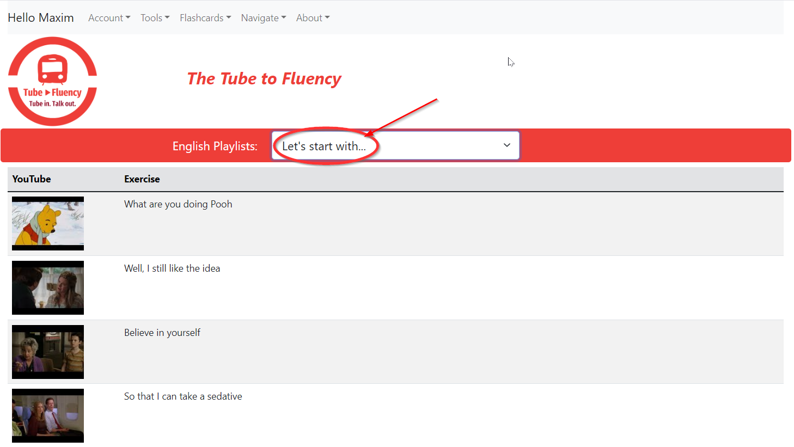
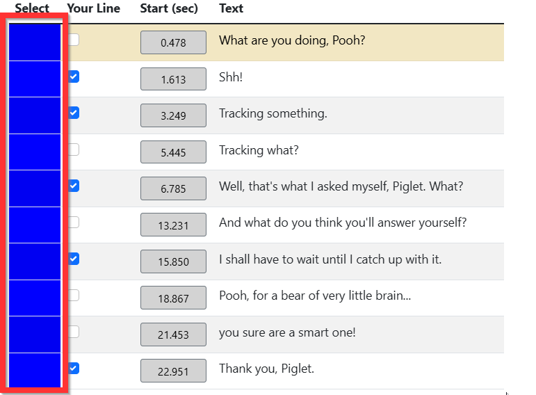

The Tube to Fluency
Imagine stepping into your favorite movie or TV show as one of the characters. That's how our English learning method works – it's like karaoke, but instead of songs, you act out fun scenes from shows you love.
Register for free with no credit card required. Your email will be used for password recovery. Choose the language you speak to use in translations and exercises.

In this document, you will see actions performed with multiple languages. Please do not be alarmed if you do not understand the words on the screen; different languages are used solely for illustration purposes.
This playlist contains short and simple videos that are easy to start with, perfect for beginners.

Use the big red buttons above the video to control playing, not the native YouTube controls.


You can review your flascard collection
You can learn your saved words
To generate an exercise, click this button
You can click this button several times, and the exercises may differ from each other.
Your character's lines should be marked with a checkmark in the subtitle table,
and these lines will be played with a muted sound.

The remaining lines, not marked with a checkmark, will be voiced by the player.

To start the exercise, click this button (Don't mix it with original video play button )
You can split a video into smaller clips to improve your focus on smaller chunks of text. This is particularly useful when you're working with longer videos that have multiple speakers and long lines. By splitting the video into smaller clips, you can focus on one speaker at a time and practice.
Don't forget you can adjust the playback speed and loop the video for better results. More about playback parameters: Adjust speed and hints to your comfort
To generate an exercise, click this button
You can click this button several times, and the exercises may differ from each other.
During exercie the player operates in one of two modes:
i.e., when unmarked subtitle lines are being played.

The lines that were marked
In this mode, the student is required to say the correct text within the
allotted time. Therefore, we have two parameters here: speed and sound level.


Decreasing the speed allows the student to have enough time to say their line. The sound in this mode can be muted partially or completely. If the sound is partially muted, the student has the opportunity to listen to it and use it as a prompt.
Up until now, we've been working with videos that have English subtitles on screen. Let's make it a bit more challenging by replacing the English subtitles with subtitles in your native language.
This will require you to quickly formulate English sentences based on text you already know. You can also record yourself and then play it back to check how well you did.
You'll find instructions on how to record the exercise at this link Record and review your drills
Remember, you don't have to record the entire exercise, just a part of it. For instructions on how to work with a part of the video, please refer to this link Split the video into shorter clips to improve your focus on smaller chunks of text.
Please note that the training subtitles are auto-generated and may contain semantic and contextual mistakes. They are provided solely as a reference tool for practicing speech.
Turn on the camera using the switch in the upper right corner of the screen.

The first time, you will need to confirm permission to use the camera and microphone.

Make sure all exercise subtitles are active, i.e., that the blue rectangles to the left of the subtitle are active. 
You can also click on the "restore" button.

You will see the image from your camera in the upper left corner of the video.

The "Record Exercise" button will become available and you can click on it to start recording.
When finished, click on the exercise button to view the result. (And again, don't mix it with original video play button )
You can delete the recording using the "Clear" button.
You can also save the recording as a file on your computer. To do this, click the "Save" button. The recording file will be saved in your "Downloads" folder.
Later, you can open the previously saved file and review the recording again. You can also share this file with your friends and teacher. The file will be available for viewing in our application.